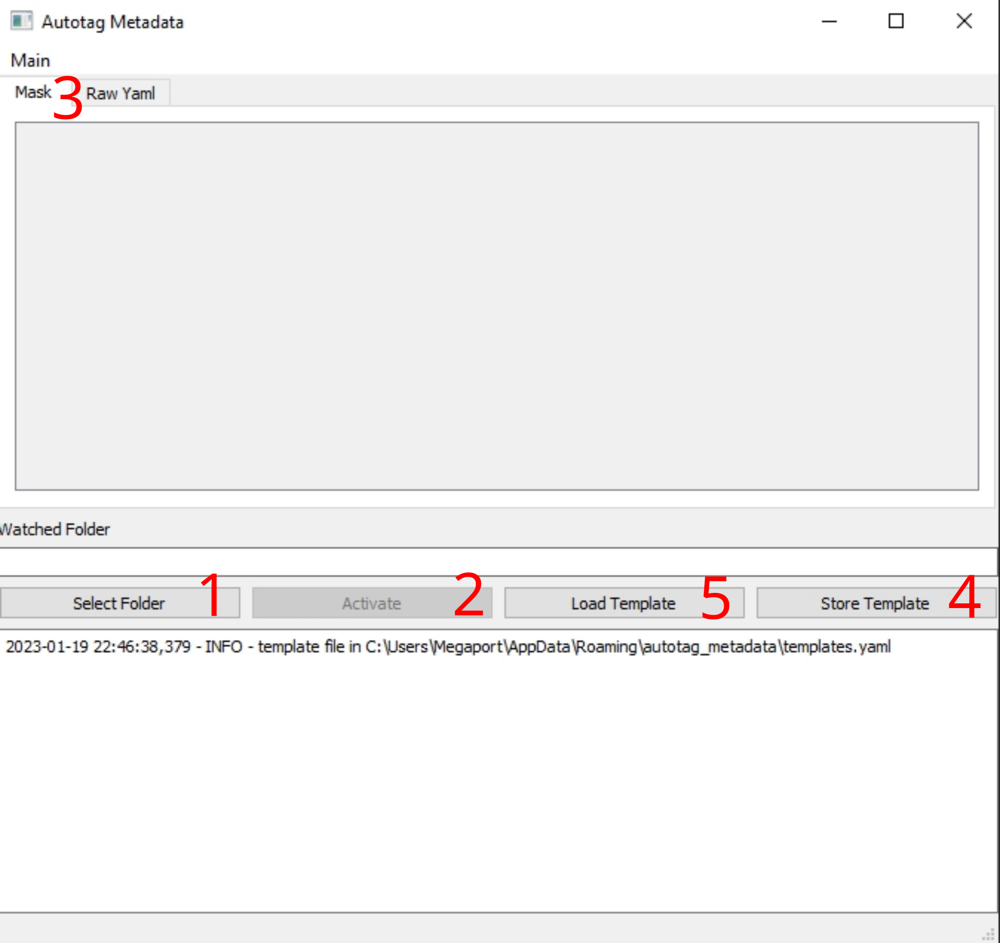

User manual
The autotag-metadata GUI is illustrated in the following figure.

Folder Selection
First select a folder that you whish to observe for file creation.
Activate/Deactivate
The folder will only be observed when the program is activated. It can also be tuned off any time.
When the program is running and a new file is created (test.txt), the current content from raw yaml will be written into a new file in the same folder name test.txt.meta.yaml.
metadata input
When the program is started the mask is empty and metadata must be added in the Raw Yaml tab. such as:
user: John
experiment: 10
When the input is not valid YAML, the background color will change to purple.
Elaborate examples on how a YAML file could look like, can be found in the example section of echemdbs’ metadata-schema.
Once you are satisfied with your input metadata, you can also edit the fields in the Mask tab.
Create template
If you intend to use the input metadata multiple times, you can store the current state into a template.
Load template
Load a template from a previous session.